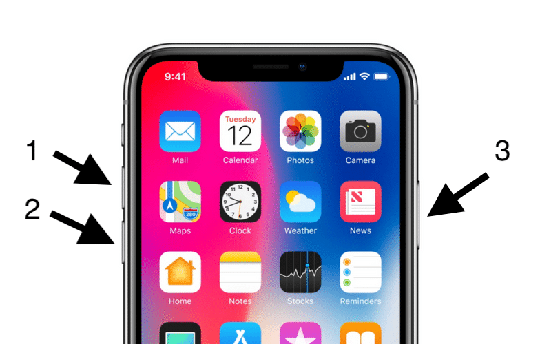

කොහොම උනත් මෙයට ප්රදාන හෙතුවක් Apple Server ඔස්සේද වෙන්න පුලුවන් විශේෂයෙන් Apple සමාගම iOS 13.6 GM release කරන්න වගේම iOS 14 Public Beta Program එක release කරන්න යන නිසාවෙන් සාමාන්යයෙන් server issues එන්න පුලුවන්. මෙක Apple Server Issue එකක්ද යන්න පහත Link එක ඔස්සේ Apple ඔස්සේම බලාගත හැකි අතර මෙහි කොල පැහැ dot එකක් තිබේ නම් Apple Server Issue එකක් නැති බව හැගී යයි.
https://www.apple.com/support/systemstatus/
එසේත් නැතිව තවත් ඔයාලගේ Apps Crash වෙනවා නම් ගන්න පුලුවන් විසදුම් කීපයක් සරල සිට සංකිර්ණ දක්වා අපි කතා කරමු.
Quit & ReOpen Applications
මෙක පැහැදි කරන්න ඔනේ නෑනේ issues තියන Apps close කරලා reopen කරන්න පුලුවන්
Delete & Reinstall or Update
සමහර iOS version release කරන විට කලාතුරකින් එම Apps නව version එකට update කල යුතු වෙනවා. මෙය එසේ වෙනවා නම් application නවතම version වලට update කීරීම සුදුසු වෙනවා. එසේ නැත්තන් Applications delete කර reinstall කරන්න පුලුවන්.
ඒ වගේම වසර ගනනකින් updates දුන්නේ නැති developer කෙනෙක් නම් මෙය සකසයි කියන්න අමාරුයි. ඒත් ඔයාලට මේ issues developers ලා වෙත email මාර්ගයෙන් දැනුම් දෙන්න පුලුවන්. නැත්තන් error report කරන්න පුලුවන්
ඒ වගේම 2020 July 7 වර්තා උන දෝශයක් අනුව Spotify, Tiktok වගේ Popular iOS Applications Crash වෙන්න Facebook Application එක හෙතු වෙන බව සොයාගෙන තියෙනවා. මෙය කලාතුරකින් සිදුවිය හැකි දෙයක් උනත් ඔයාලටත් facebook application එක delete කරලා Device එක Restart හෝ Hard Reboot කරලා බලන්න පුලුවන් අනිත් Applications Crash වෙන්නේ නැද්ද කියලා.
Hard Reboot Your Device
ඔයාලට device hard reboot කරන්න පුලුවන් මෙය off කර on කරනවාම නෙවෙයි මේ සදහා
iPhone 8 හා ඉදිරි device වලදී

Volume Up Button එක Click කර Quick Release කර Volume Down Button එක Click කර Quick Release කර Side Button එක Press and Hold කර Screen එක Black වන තුරු තිබිය යුතුයි.
iPhone 7 හා 7 Plus නම්

Volume Down Button එක හා Side Button එක Press කර Hold කරගෙන සිටිය යුතුයි Screen එක Black වෙන තුරු.
iPhone 6s / 6s Plus හා පැරණි එවා නම්

Side Button එක හා Home Button එක press කර hold කරගෙන සිටිය යුතුයි screen එක Black වෙන තුරු.
Restore Device
මෙක ගොඩක් හොද විසදුමක් අපිට itunes හරහා restore කරන්න පුලුවන් device එක මෙක කොහොමත් වසරකට සැරයක් වත් කරනවා නම් හොදයි ඒ වගේම Restore කරන්න කලින් අනිවාරයෙන්ම itunes ඔස්සෙ ඔයාලගේ ඔක්කම files backup කරගන්න අමතක කරන්න එපා
● Download the IPSW file according to your device & software version
● Apple ID and Password that you are using on iPhone/iPad.
● Turn off Find My iPhone/iPad Activation – Settings app > Profile name > iCloud > Find My > Turn off Toggle and Enter Verification Apple ID password.
● Now Mac Have Enough Free space to backup your iPhone/iPad
● Connect your iPhone to Mac using Cable.
● Launch Finder on Mac running macOS Catalina. [Apple Removed iTunes]
● Your iPhone/iPad will show in Finder Sidebar.
● Click on Device’s name to get the summary page.
● Under the Backup section, click on the Backup Now button to start backup before restoring start.
● Once Backup is complete, Use Options + Restore iPhone/iPad button [Mac] and Shift + Restore iPhone/iPad Button [Windows].
● Browser ipsw file that downloaded at first.
● Click on open to start the restore process.
● it will take time depends on Data saved on iPhone/iPad

Downgrade From iOS 14 to iOS 13
ඔයාලට මේ ප්රශ්නය ආවේ iOS 14 වලදි නම් හොදම දේ දැනට sign in වෙන්න පුලුවන් අන්තිම iOS 13 version එකට downgrade වෙන එකයි මෙකත් restore කරනවට සමානයි ගොඩක් ඉතිං මෙතනදි විශෙෂයෙන් Data Backup ගැන හිතන්න ඔනේ මොකද iOS 14 වලදි කරපු backup එකක් iOS 13 වලදි restore කරන්න බැරි වෙන්න පුලුවන් මතක ඇතුව data වෙන විදියකට හරි backup කරගන්න.
ඉතිං මේ ක්රම ඔක්කගේ මේ App crasg issue එක resolve කරගන්න පුලුවන් වෙයි කියලා හිතනවා. කොහොම උනත් ලොකු කාලයක් යන්න කලින් මේ හැමදේම විසදන්න Apple සමාගම හා Apple Application Developers ලා කටයුතු කරයි.